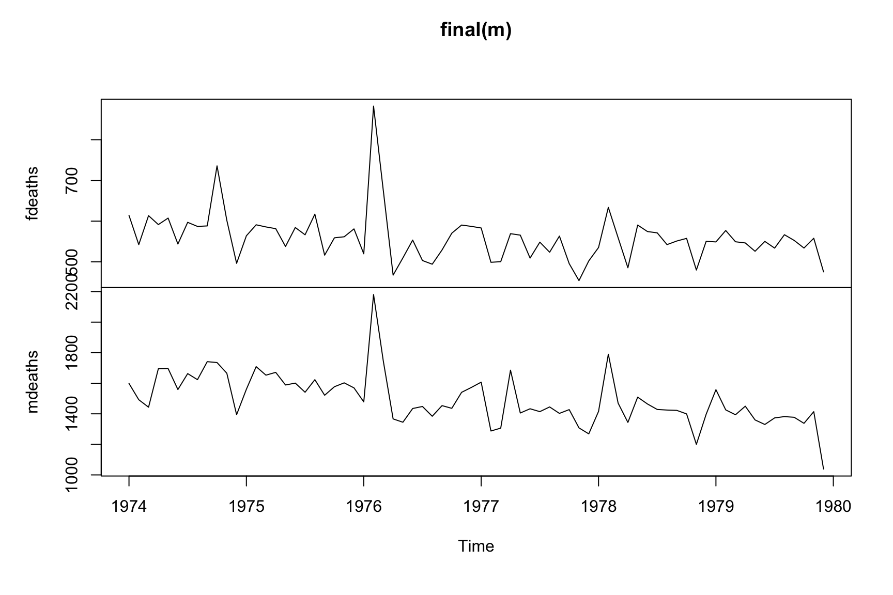
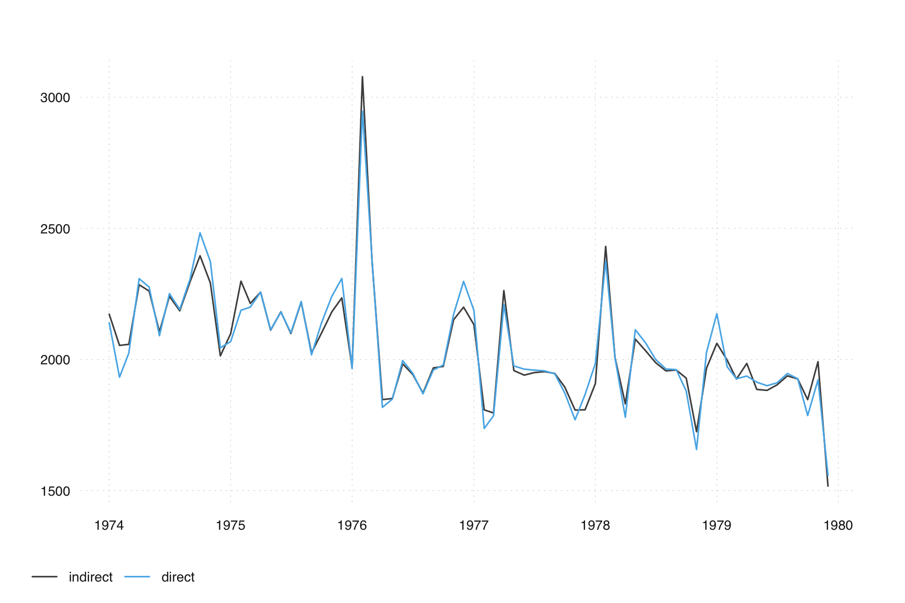

14 Indirect vs direct adjustment
You are reading an early draft of Seasonal Adjustment in R. This chapter should be readable but needs polishing.
Seasonally adjusted series of aggregates can be derived in two ways: either directly by adjusting the aggregates or indirectly by aggregating seasonally adjusted data of the component series. Generally, the results will differ, sometimes significantly.
This may be because the individual series have different seasonal patterns, or because of non-linear effects, which may arise, e.g., from multiplicative seasonal adjustment calculations.
In addition, indirect adjustment may make sense if accounting relationships between series shoulb be maintained.
Conceptually, neither the direct approach nor the indirect approach is optimal, and we will discuss some arguments later on.
Intuitively, indirect adjustment is generally better when the components have:
- Distinct seasonal patterns
- Adjustments of good quality
Direct adjustment is generally better when the components have:
- Similar seasonal patterns (summing the series may cancel some noise)
Before we go into the details of the distinction between direct and indirect adjustment, let’s take a look at how seasonal can handle multiple time series.
14.1 Multiple series adjustment
Since seasonal version 1.8, it is now possible to seasonally adjust multiple series in a single call to seas(). This is done by using the built-in batch mode of X-13. It removes the need for loops or lapply() in such cases and finally brings one missing feature of X-13 to seasonal – the composite spec.
Multiple adjustments can be performed by supplying multiple time series as an "mts" object:
This will perform two seasonal adjustments, one for fdeaths and one for mdeaths. X-13 spec-argument combinations can be applied in the usual way, such as x11 = "". Note that if entered that way, they will apply to both series. The vignette on multiple adjustments describes how to specify options for individual series.
14.1.1 Backend
X-13 ships with a batch mode that allows multiple adjustments in a single call to X-13. This is now the default in seasonal (multimode = "x13"). Alternatively, X-13 can be called for each series (multimode = "R"). The results should be usually the same, but switching to multimode = "R" may be useful for debugging:
seas(cbind(fdeaths, mdeaths), multimode = "x13")
#> $fdeaths
#>
#> Call:
#> seas(x = cbind(fdeaths, mdeaths), multimode = "x13")
#>
#> Coefficients:
#> Constant AO1976.Feb MA-Seasonal-12
#> -0.01578 0.43345 0.63119
#>
#>
#> $mdeaths
#>
#> Call:
#> seas(x = cbind(fdeaths, mdeaths), multimode = "x13")
#>
#> Coefficients:
#> AO1976.Feb LS1976.Apr AO1977.Apr AO1978.Feb
#> 0.3319 -0.1330 0.1957 0.2305
#> AO1979.Dec MA-Nonseasonal-01 MA-Seasonal-12
#> -0.3149 -0.3854 0.6120
#>
#>
#> $call
#> seas(x = cbind(fdeaths, mdeaths), multimode = "x13")
#>
#> attr(,"class")
#> [1] "seas_multi" "list"
seas(cbind(fdeaths, mdeaths), multimode = "R")
#> $fdeaths
#>
#> Call:
#> seas(x = cbind(fdeaths, mdeaths), multimode = "R")
#>
#> Coefficients:
#> Constant AO1976.Feb MA-Seasonal-12
#> -0.01578 0.43345 0.63119
#>
#>
#> $mdeaths
#>
#> Call:
#> seas(x = cbind(fdeaths, mdeaths), multimode = "R")
#>
#> Coefficients:
#> AO1976.Feb LS1976.Apr AO1977.Apr AO1978.Feb
#> 0.3319 -0.1330 0.1957 0.2305
#> AO1979.Dec MA-Nonseasonal-01 MA-Seasonal-12
#> -0.3149 -0.3854 0.6120
#>
#>
#> $call
#> seas(x = cbind(fdeaths, mdeaths), multimode = "R")
#>
#> attr(,"class")
#> [1] "seas_multi" "list"In general, multimode = "x13" is faster. The following comparison on a MacBook Pro shows a modest speed gain, but more significant differences have been observed on other systems:
many <- rep(list(fdeaths), 100)
system.time(seas(many, multimode = "x13"))
# user system elapsed
# 13.342 0.406 13.766
system.time(seas(many, multimode = "R"))
# user system elapsed
# 15.819 0.814 16.958The return value of system.time tells you how much time has been used for the operation. The first number measures the time spent in the current session, while ‘elapsed’ measures the overall time, as measured by the clock. system measures the operating system overhead. The distinction between these numbers is not too significant here; simply focus on ‘elapsed’, the details will be more interesting in the parallel examples.
14.1.2 Parallelization
In principle, R is single threaded, and operations are normally performed on a single core. While there are many ways to perform parallel operations in R, their details often depend on the platform. So, currently, it is not possible to call parallelized operations directly from seasonal. Here is an example that computes the operations below on an 8 core Mac. The furrrr and the future package save a lot of the complications arising around parallelization.
14.1.2.1 All Platforms
On Windows, Mac and Linux, you can use the multisession strategy, which essentially starts a separate session of R for any of the available cores. In the following, we use an 8 core Mac and gain a more than 4 times speed gain.
library(furrr)
plan(multisession, workers = future::nbrOfWorkers())
system.time(future_map(many, seas))
# user system elapsed
# 0.171 0.008 4.08114.1.2.2 Non-Windows Platforms
Mac and Linux allow forking parallelization, which is easier to set up. Here, multiple cores share the same memory, without having to start separate sessions:
library(furrr)
plan(multicore, workers = future::nbrOfWorkers())
system.time(future_map(many, seas))
# user system elapsed
# 23.389 1.704 3.50814.2 The composite spec
Support for the X-13 batch mode makes it finally possible to use the composite spec – the one feature of X-13 that was missing in seasonal. Sometimes, one has to decide whether seasonal adjustment should be performed on a granular level or on an aggregated level. The composite spec helps you to analyze the problem and to compare the direct and the indirect adjustments.
The composite argument is a list with an X-13 specification that is applied on the aggregated series. Specification works identically for other series in seas(), including the application of the defaults. If you provide an empty list, the usual defaults of seas() are used. A minimal composite call looks like this:
The final() command now returns three series, with one adjustment for each series, and one for the composite (direct) adjustment:
You can verify that the composite refers to the total of mdeaths and fdeaths by running:
m_direct <- seas(ldeaths)whereldeaths (which is also shipped with R, see ?ldeaths for an explanation on the data) is the sum of mdeaths and fdeaths:
all.equal(ldeaths, mdeaths + fdeaths)
#> [1] TRUE14.3 Indirect vs direct adjustment
The composite adjustment contains all the information that is needed to analyze the direct vs the indirect adjustment.
ts_plot(
indirect = final(m_composite)[, 'mdeaths'] + final(m_composite)[, 'fdeaths'],
direct = final(m_composite)[, 'composite']
)
What we have seen above is an example of indirect vs direct adjustment. How to judge which one is better? Two criteria are often used: smoothness and stability
14.3.1 Built-in tools
X-13 offers various diagnostics to compare direct and indirect adjustments
- Spectral graphs
- Sliding spans
- Set the same sliding spans length for all components
- Revisions history
- Set the same history span for all components
- Smoothness measures (Statistics Canada introduced in X-11-ARIMA)
- (We don’t use these much)
Some additional statistics can found in the X-13 output.
out(m_composite)14.3.2 Smoothness
In statistical agencies, the choice is often based on characteristics of the adjusted series that many data users find desirable. For comparing direct and indirect adjustm the property most often employed has been smoothness as measured by one or more smoothness measures. We will cover smoothness in more detail in Chapter 15.
14.3.3 Sliding Span
To use of a smoothness measure is obviously quite arbitrary. A better way to decide between indirect and direct adjustment may be an examination of the stability of the series, as it can be retrieved from the sliding span spec. We have more to say on sliding spans in Chapter 15 and Chapter 15 and Chapter 16. For now, let’s apply the sliding span specs to our series above and decide based on the returned statistics.
14.3.4 Other considerations
The choice between direct and indirect seasonal adjustment may be guided by the expected uses of seasonally adjusted data. For some uses, preserving accounting and aggregation relationships in the data may be crucial, while for other uses, the time-series properties of the derived estimates may be more important.
There is no single standard for what’s the best practice. Some countries obtain the seasonally adjusted aggregates as the sum of adjusted components, while others prefer to adjust the totals independently. This can result in discrepancies between the seasonally adjusted total and the sum of the seasonally adjusted component series.
According to Lee (2018), allocating discrepancies on components to achieve consistency should be avoided.
Lee, Kwangwon. 2018. “7. Seasonal Adjustment.” In Quarterly National Accounts Manual (2017 Edition). International Monetary Fund.
If the differences are insignificant, accounting and aggregation relationships in the seasonally adjusted data should be guaranteed.
When the indirect approach is considered, seasonally adjusted aggregates should be checked to exclude the presence of residual seasonality using the F-test available in X-13.
X-13 offers various additional diagnostic tools to evaluate the direct and indirect adjustment of aggregates. The program calculates seasonally adjusted aggregates using the direct and indirect approach and provides in output a set of statistics to compare the results (M diagnostics, measures of smoothness, frequency spectrum diagnostics, etc.).
Furthermore, sliding spans and revision history diagnostics can be requested to assess which of the two approaches provides more stable and reliable seasonally adjusted results.